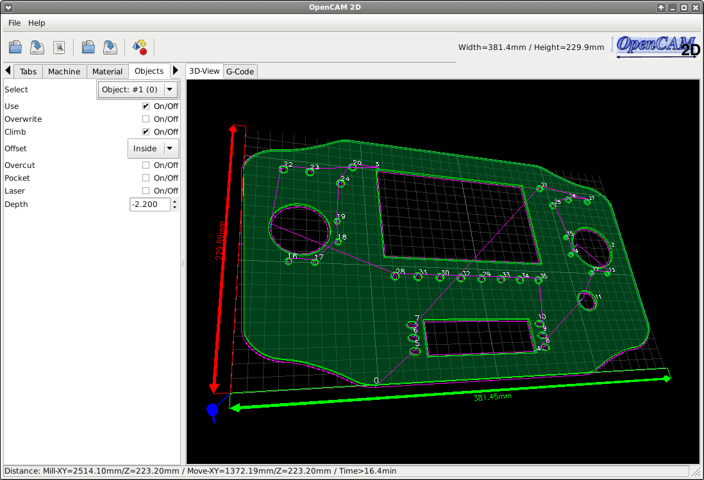

Objects
Objekt-Parameter
Select:
Objekt-Auswahl
Use:
Objekt ignorieren
Overwrite:
Globale Parameter sollen für dieses Objekt überschrieben werden
Climb:
Gleichlauffräsen, dabei wird das Werkstück in Drehrichtung des Fräsers bewegt
Offset:
Auswahl des Werkzeug-Offsets (Innen/Keiner/Außen)
Overcut:
Zum ausfräsen von Innenkanten die bedingt durch den Werkzeug-Radius nicht errecht werden können
Pocket:
noch nicht Implementiert
Laser:
das 'Werkzeug' wird auf Z0.0 gefahren und für jedes Fräsbahn an und aus geschaltet
Depth:
Frästiefe in mm (negativ)
Holding-Tab's:
aktiviert/deaktiviert Holding-Tab's für dieses Objekt
Order:
Ändern der Fräs-Reihenfolge (Auto=innere dann äußere Objekte / -1 -> -5 Objekt wird als erstes gefräst / +1 -> +5 Objekt wird als letztes gefräst)